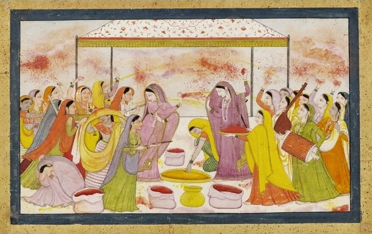

The Legend of Holi

When Lord Krishna was a baby, he transitioned into his characteristic dark blue skin colour because a she demon Putana poisoned him with her breast milk.
In his youth, Krishna despairs whether fair skinned Radha and other Gopikas (girls) will like him because of his skin colour.
His mother, tired of the desperation, asks him to approach Radha and colour her face in any colour he wanted. This he does, and Radha and Krishna became a couple.
The playful colouring of the face of Radha has henceforth been commemorated as Holi.